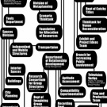
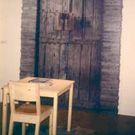
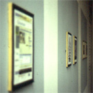
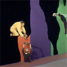

Basekamp team > Projects
Projects
A selection of collaborative projects by members of the Basekamp team
|  plausible artworlds organized by basekamp exhibition & international conference, philadelphia 2007 |
 walk talk eat talksomemore co-organized by basekamp & ccred april 2006 |
post autonomy project basekamp (participant) the bureau of research into post autonomy march 2006 |
curating degree zero basekamp (participant) barnaby drabble & dorathea richter 2005 - ongoing |
|||
making room for redundancy with lars fischer 2005 - ongoing |
organizational art summit basekamp (participant) learning lab denmark 2005 |
mobile sandbox unit basekamp 2005 |
evident use basekamp & the institute for advanced architecture 2004 - 2006 |
|||
connect the dots with david dempewolf september 2004 |
camp for oppositional architecture basekamp (participant) anarchitektur june 2004 |
infest - artist run culture basekamp (participant) february 2004 |
i deal opportunities with per hüttner may 2003 |
|||
ideal art for the market with gavin wade september 2002 |
 through the pedagogical looking glass basekamp & friends may 2001 |
dirty deeds re done basekamp & friends 2001 - 2002 |
 building paranoia basekamp & friends 2001 |
|||
love the role basekamp & friends 2000 |
 curated basekamp & friends june 2000 |
portfolio day basekamp & friends 2000 |
failed attempt basekamp & friends 1999 |
|||
|  stunt double basekamp & friends june 1999 |
 hegemonic bar basekamp & friends march 1999 |
heroes, villains, and marginals basekamp & friends november 1998 |
||||